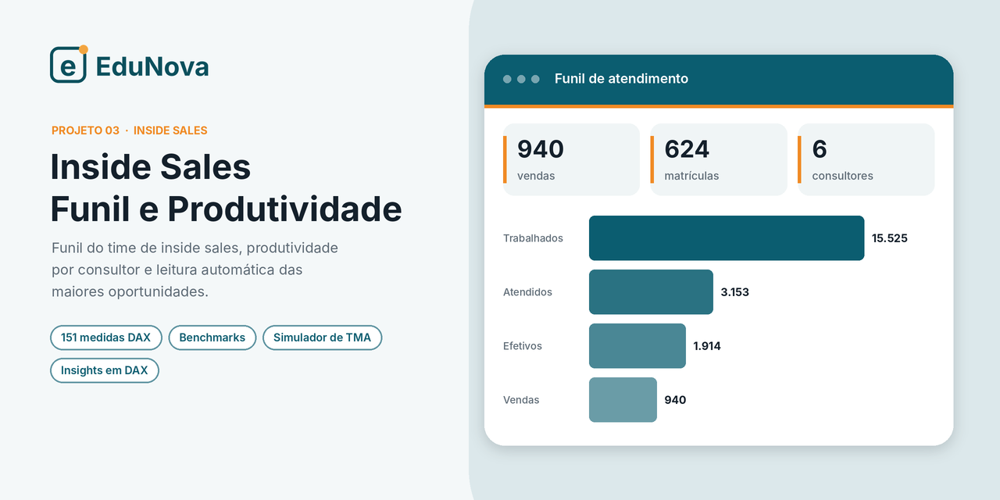

01 · Contact center
Gestão à Vista · Contact Center
Funil de conversão de inscritos em matrícula por parceira de atendimento, cohort D0–D15+, pace de meta, produtividade e custo por matrícula.
Sou Murillo Jesus, analista de Planejamento e Inteligência Comercial e fundador da DataMur Solutions. Construo painéis de funil de conversão, contact center e finanças e ferramentas de gestão que mostram onde está o gap e qual alavanca move o resultado.
Cada projeto está em formato PBIP, com os dados fictícios embutidos no modelo: baixe, abra no Power BI Desktop e clique em Atualizar.
Funil de conversão de inscritos em matrícula por parceira de atendimento, cohort D0–D15+, pace de meta, produtividade e custo por matrícula.
Ações comerciais dos consultores de campus: planejado × executado, custo, inscritos e matrículas gerados, cobertura da equipe e mapa por estado.

Funil do time de inside sales, produtividade por consultor, desempenho por curso e leitura automática das maiores oportunidades.
DRE gerencial com orçado e forecast, caixa e liquidez, capital de giro, dívida, CAPEX e pessoas, em seis páginas de leitura executiva.
Plataforma de governança de campanhas comerciais de contact center, do cadastro ao encerramento, com apuração automática de resultados.
Os dados fictícios estão dentro do próprio modelo. Não há arquivo externo, conexão nem credencial a configurar.
Use o botão “Baixar PBIP” do projeto e extraia o .zip numa pasta do seu computador.
Dê dois cliques no arquivo .pbip. É preciso o Power BI Desktop em versão recente, com suporte a projetos PBIP.
O modelo carrega os dados embutidos e todas as páginas ficam prontas para explorar.
Fatos, dimensões, calendário, relacionamentos e tabelas auxiliares desenhados para a pergunta de negócio.
Inteligência de tempo, cohort, pace, bases comparáveis, calculation groups e textos de leitura com cor condicional.
Leitura resiliente de listas, normalização de tipos, grades analíticas e diagnóstico de qualidade da base.
Funil, alô, efetividade, conversão, produtividade por posição de atendimento, CPMAT e atingimento de meta.
DRE, EBITDA, orçado × forecast, DSO, DPO, ciclo financeiro, liquidez e dívida/EBITDA.
Design de relatório, RLS, versionamento em PBIP/TMDL no Git e aplicações web em Python.